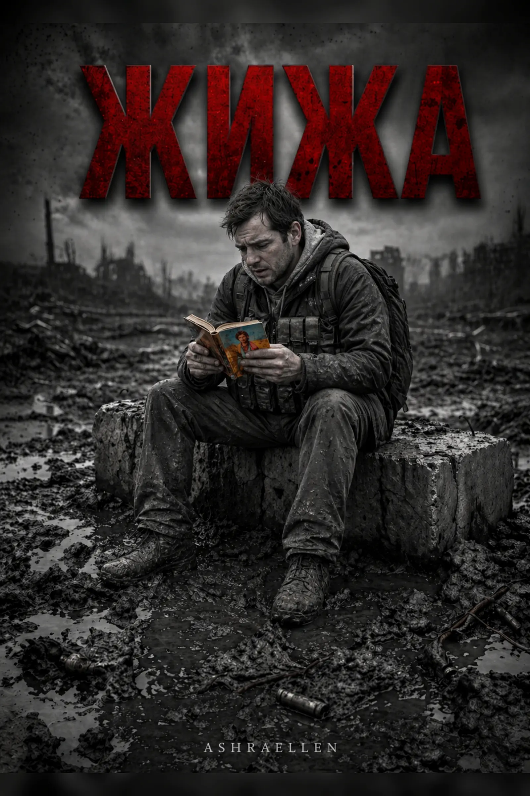

Том I — БЕТОН
Стабильность становится тюрьмой. Память редактируется. Первая трещина появляется внутри самой Системы.
Ashraellen
МОНОЛИТ — трилогия социальной фантастики, антиутопии и философского киберпанка о контроле, памяти и распаде систем.
БЕТОН / ЖИЖА / ГАЗ
Перед вами хроника контролируемого распада: последовательная фиксация фазового перехода социальной материи, запечатлённая в трёх агрегатных состояниях: БЕТОН, ЖИЖА, ГАЗ.
Мы привыкли считать стабильность безопасностью. Но что, если абсолютная стабильность — это лишь состояние предельного затвердевания, где любая живая мысль становится дефектом, а любое внутреннее сопротивление — угрозой для системы контроля?
В мире МОНОЛИТА общество превращено в идеальную конструкцию: без швов, без памяти, без личной правды и без права на внутренний резонанс. Здесь «исправление» называется милосердием, «удаление шума» — заботой о будущем, а редактирование реальности становится нормальным механизмом управления человеком.
Трилогия документирует путь от неподвижности социального Бетона через стадию эрозии, брожения и потери формы к финальному состоянию полной разгерметизации. Это история о власти, которая редактирует прошлое, о человеке внутри системы, о социальной дрессировке, психологическом давлении и первой трещине, с которой начинается освобождение.
МОНОЛИТ — это антиутопическая трилогия для тех, кто ищет не просто фантастику о будущем, а жёсткую философскую прозу о настоящем: о контроле сознания, страхе, памяти, выборе и распаде мира, который слишком долго притворялся вечным.
открыть страницу книги
Стабильность становится тюрьмой. Память редактируется. Первая трещина появляется внутри самой Системы.

После первой трещины форма начинает распадаться. Человек постепенно становится веществом среды.
Финальная разгерметизация. Смысл начинает распространяться там, где форма уже не удерживает его.
сигнал
Система боится не бунта.
Она боится первой трещины.